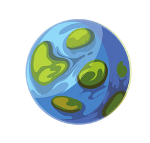
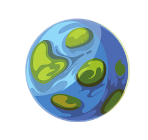

The 1st Planet from the Sun
Interesting facts about the composition and minerals of the planet.
Iron on Mercury
Iron is a grey, metallic, silvery metal. Pure iron is soft and very malleable. Iron is the end point of nuclear reactions in large stars. It is the last element to be produced before the violent collapse of a supernova scatters the iron into space. Iron reacts with most acids like sulfuric acid. It makes ferrous sulfate when reacted with sulfuric acid.
Mercury
Mercury is a terrestrial planet, meaning that it is composed of silicate minerals and metals that are differentiated into an iron core and silicate mantle and crust. But unlike the other rocky planets of the solar system, iron makes up a disproportionately large amount of the planet. Even though the planet is small, Mercury is very dense. Each cubic centimetre has a density of 5.4 grams, with only the Earth having a higher density. This is largely due to Mercury being composed mainly of heavy metals and rock. Mercury has just 38% the gravity of Earth, this is too little to hold on to the atmosphere it has which is blown away by solar winds. However, while gases escape into space they are constantly being replenished at the same time by the same solar winds, radioactive decay and dust caused by micrometeorites.


 
